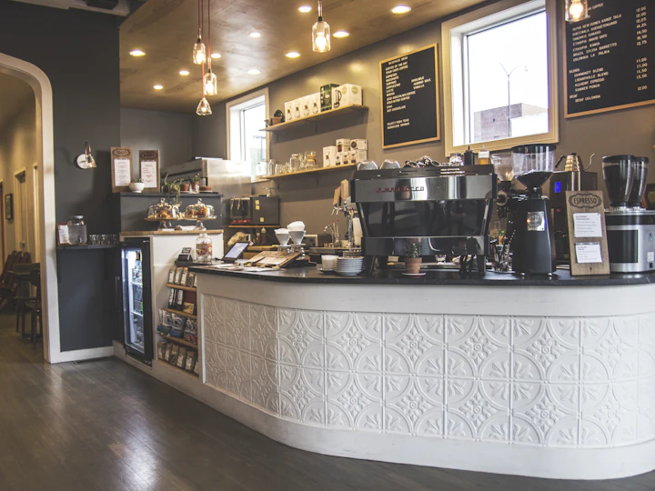

Coffee from one farm at a time, and pastries out of the oven by 7:30
A small café on Alder Street with twelve seats, a long window bench and a dog bowl by the door.
Mon to Sat, 7:30 to 16:00


Opening hours
| Monday | 7:30 to 16:00 |
|---|---|
| Tuesday | 7:30 to 16:00 |
| Wednesday | 7:30 to 16:00 |
| Thursday | 7:30 to 16:00 |
| Friday | 7:30 to 16:00 |
| Saturday | 8:30 to 16:00 |
| Sunday | Closed |
Closed on public holidays. In August we close for the first two weeks.
Find us
14 Alder StreetNext to the bike shop, opposite the park
The Alder Street tram stop is two minutes away on foot. There are bike racks right outside and paid parking on Mill Road.
On a real site, the map opens directions in your phone's map app.
Call or write
- Phone
- (503) 555-0142
- hello@cafelumen.example
- @cafe.lumen
We take orders for whole loaves and pastry boxes until 14:00 the day before. On a real site the phone number starts a call with one tap.